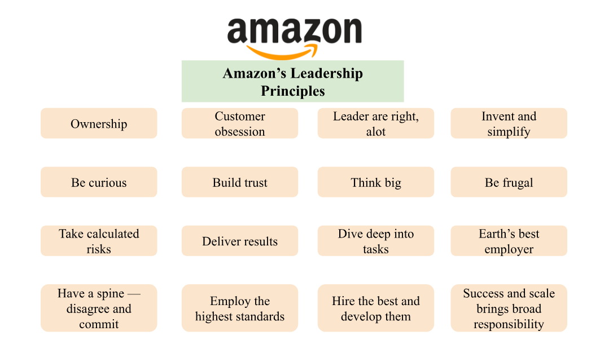

In May 2024, I applied for an SDE-2 position at Amazon. About three weeks later, I received an email from an Amazon recruiter inviting me to a brief phone call. During the 30-minute call, the recruiter discussed the role and the next steps, then sent me an online assessment. The assessment was divided into three parts:
I was given five working days to complete the assessment. I finished it in four days, taking about two hours to complete everything. I managed to solve both coding questions and provided explanations for my solutions. Three days after submitting the assessment, I received an email from the recruiter informing me that I had passed. She asked me to select a date for the onsite interview. I chose a date five weeks later to allow ample time for preparation.
One aspect of the Amazon onsite interview that I appreciated compared to DoorDash's process was the flexibility in scheduling. I was able to spread the 4 interview rounds over two days, with each round lasting 1 hour:
For the coding rounds, I focused on solving Amazon-tagged questions on Leetcode. Practicing medium to hard-level questions and solving them within 30 minutes is crucial for Amazon interviews. I also practiced with friends and did several mock interviews on Pramp.com.
For system design preparation, I read both parts of Alex Xu’s System Design Interview book and watched YouTube videos by HelloInterview and Interviewing.io. Additionally, I found Donne Martin’s System Design Primer on GitHub to be an excellent resource for understanding system design fundamentals.
Behavioral questions are a vital part of Amazon interviews. Amazon places significant emphasis on its 16 Leadership Principles, and during behavioral interviews, they want to see that candidates embody these principles. As I read online, the weight of your behavioral interview results can be as much as 80% for non-technical roles and at least 50% for technical positions.
Here are some sample Amazon behavioral questions I encountered during my preparation:
It’s essential to answer behavioral questions using the STAR method, where each response should be around 2-4 minutes long.
The STAR method helps structure answers to behavioral interview questions as follows:
The first day consisted of two coding rounds. Each round began with 30 minutes of Leadership Principles questions, followed by 25 minutes for the coding question itself, and the final 5 minutes for asking questions about Amazon.
In the first coding round, I was asked to implement a data structure similar to TreeMap from scratch and explain its time and space complexity. I did very well in this round, explaining my approach clearly and coding quickly. The interviewer asked a few follow-up questions before wrapping up.
The second round also started with Leadership Principles questions. The coding challenge was an algorithmic problem related to a LeetCode medium-level BFS question. I found it relatively straightforward and completed it quickly, explaining my thought process along the way.
The second day began with a system design round, led by an Engineering Manager. The first 30 minutes were dedicated to behavioral questions. It’s crucial to tell stories that align with Amazon’s Leadership Principles, as interviewers take notes and ask 2-3 follow-up questions to delve deeper into your projects. Therefore, it’s essential to discuss past experiences where you can confidently explain all the details.
The system design portion of the interview lasted only 25 minutes, where I was asked to design a feed system for a social media platform. I was surprised by the limited time and the fast pace of the discussion. The interviewer asked me to speed up and frequently shifted topics, making time management crucial. I wasn’t entirely satisfied with this round, as I felt rushed and unable to delve deeply into certain aspects.
The final round was another coding and behavioral interview. The first 30 minutes involved answering 3-4 behavioral questions with follow-ups. The coding challenge was a LeetCode hard-level algorithm and data structure problem. It took me about 15 minutes to fully understand the question due to its complexity. I explained my approach, but it wasn’t optimal. Although I knew a monotonic stack would be the best solution, the problem was tricky with many edge cases. I managed to code my solution in the last 7-8 minutes and answered the interviewer’s questions. The result of this round was a “lean hire.”
The first day of the onsite interview went well, and I was pleased with my performance. However, the second day didn’t go as expected, particularly during the system design round. Time management is crucial for coding and system design questions. Candidates must practice answering these questions within 25 minutes, as the first 30-32 minutes are dedicated to behavioral questions, and the last 4-5 minutes are reserved for any additional questions. Three days after the onsite interviews, the Amazon recruiter called to inform me that I was rejected. It hurts :)